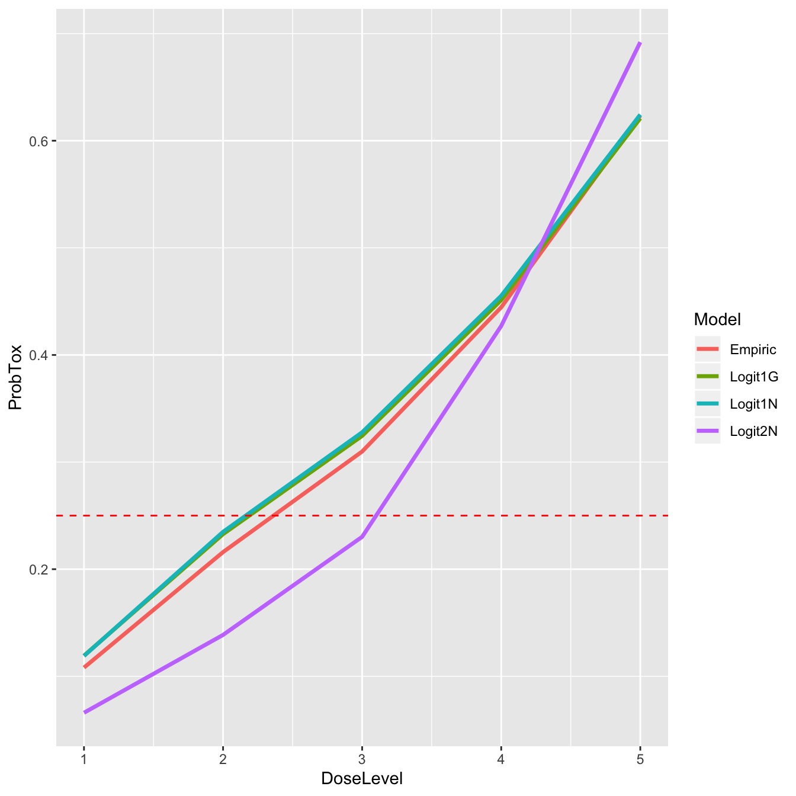

The Continual Reassessment Method (CRM) is the elder statesman of adaptive clinical trials. Originally published by O’Quigley, Pepe, and Fisher (1990), it assumes a smooth mathematical form for the dose-toxicity curve to conduct a dose-finding trial seeking a maximum tolerable dose (MTD). It is a truly seminal design, with many variants appearing over the years to handle different clinical scenarios, such as seperate groups, late-onset toxicity, efficacy and toxicity outcomes, and more.
In this vignette, we focus on the original Bayesian design that seeks the MTD in an homogeneous patient group. Let \(x_i\) be a standardised dose-level. The probability of dose-limiting toxicity (DLT) at dose \(x_i\) is estimated to be \(F(x_i, \theta)\), where \(F\) is a smooth mathematical function, and \(\theta\) is a general vector of parameters. Even within this simple scenario, there are variants that use different forms for \(F\), and different distributions on \(\theta\).
Let \(Y_i\) be a random variable taking values \(\{0, 1\}\) reflecting the absence and presence of DLT respectively in patient \(i\). A patient administered dose \(x_i\) has estimated probability of toxicity \(F(x_i, \theta)\) so that the likelihood component arising from patient \(i\) is
\[ F(x_i, \theta)^{Y_i} (1 - F(x_i, \theta))^{1-Y_i} \]
After the evaluation of \(J\) patients, the aggregate likelihood is:
\[ L_J(\theta) = \prod_{i=1}^J \left\{ F(x_i, \theta) \right\}^{Y_i} \left\{ 1 - F(x_i, \theta) \right\}^{1-Y_i} \]
This quantity can either be maximised with respect to \(\theta\) to obtain maximum likelihood estimate, or augmented with priors and analysed in a Bayesian way. CRM was originally published as a Bayesian design and that is the approach we take here in trialr using Stan.
The CRM variants currently implemented in trialr for MTD-finding in a single homogeneous group are:
model |
Link Function | Parameters |
|---|---|---|
empiric |
\(F(x_i, \beta)\) = \(x_i^{\exp{\beta}}\) | normal prior on \(\beta\); |
logistic |
\(F(x_i, \beta) = 1 / (1 + \exp{(-a_0 - \exp{(\beta)} x_i}))\) | \(a_0\) fixed and a normal prior on \(\beta\) |
logistic_gamma |
\(F(x_i, \beta) = 1 / (1 + \exp{(-a_0 - \beta x_i)})\) | \(a_0\) fixed and a gamma prior on \(\beta\) |
logistic2 |
\(F(x_i, \alpha, \beta) = 1 / (1 + \exp{(-\alpha - \exp{(\beta)} x_i)})\) | normal priors on \(\alpha\) and \(\beta\) |
These models are compiled when you install trialr and accessed via the stan_crm function. For instance, to fit the empiric model one would use model = 'empiric'. Examples are given below.
Where necessary, the slope parameter \(\beta\) is exponentiated to ensure a positive value. One of the core assumptions of the CRM and dose-escalation methods in general, is that the probability of toxicity increases with dose. If a negative value for \(\beta\) is non-sensical, we should reflect that in the model parameterisation. In the model with gamma prior, this step is not necessary because the prior constrains the values to be positive.
Other CRM variants could easily be added in future, if requested. For instance, Cheung (2011) defines a model that uses the hyperbolic tangent link function, but we have not implemented it here because we have never required it.
Let’s conduct some examples.
To access the Stan implementations of the CRM, we must load trialr:
library(trialr)
For illustration, we consider a scenario where we investigate 5 dose-levels seeking the dose with Pr(DLT) closest to 25%. We will assume that our skeleton (i.e. our prior belief of the dose-toxicity curve) is
target <- 0.25 skeleton <- c(0.05, 0.15, 0.25, 0.4, 0.6)
Say that we have treated 6 patients at 3 dose-levels:
| Patient | Cohort | Dose-level | DLT |
|---|---|---|---|
| 1 | 1 | 2 | 0 |
| 2 | 1 | 2 | 0 |
| 3 | 2 | 3 | 0 |
| 4 | 2 | 3 | 0 |
| 5 | 3 | 4 | 1 |
| 6 | 3 | 4 | 1 |
These data can be conveyed using a simple nomenclature for phase I outcomes. We use integers to represent dose-levels given and the letters T and N to represent toxicity or no-toxicity for individual patients. These clusters can be strewn together to represent the outcomes of cohorts of patients. For instance, the outcomes above can be represented:
outcomes <- '2NN 3NN 4TT'
We will update each of the CRM models implemented in trialr for this scenario. We then briefly compare the inferences at the end.
The empiric model requires only that a prior normal standard deviation be specified for the slope parameter. We use a prior variance of \(\beta\) equal to 1.34, as used by Cheung in his examples.
fit1 <- stan_crm(outcomes, skeleton = skeleton, target = target, model = 'empiric', beta_sd = sqrt(1.34), seed = 123)
fit1 #> Patient Dose Toxicity Weight #> 1 1 2 0 1 #> 2 2 2 0 1 #> 3 3 3 0 1 #> 4 4 3 0 1 #> 5 5 4 1 1 #> 6 6 4 1 1 #> #> Dose Skeleton N Tox ProbTox MedianProbTox ProbMTD #> 1 1 0.05 0 0 0.108 0.0726 0.2140 #> 2 2 0.15 2 0 0.216 0.1900 0.2717 #> 3 3 0.25 2 0 0.310 0.2972 0.2657 #> 4 4 0.40 2 2 0.444 0.4484 0.2090 #> 5 5 0.60 0 0 0.624 0.6395 0.0395 #> #> The model targets a toxicity level of 0.25. #> The dose with estimated toxicity probability closest to target is 2. #> The dose most likely to be the MTD is 2. #> Model entropy: 1.49
In this demonstration, we set the seed for reproducibility when sampling however, in the wild, you might not do this.
We can extract the samples of the posterior probability of DLT at each dose, stored as the series of parameters called prob_tox. From there, all manner of inference is possible. For example, we can recreate the posterior expected probability of DLT at each dose shown above. It is simply the mean of each sample:
prob_tox_samp1 <- as.data.frame(fit1, 'prob_tox') prob_tox1 <- colMeans(prob_tox_samp1) prob_tox1 #> prob_tox[1] prob_tox[2] prob_tox[3] prob_tox[4] prob_tox[5] #> 0.1081169 0.2159618 0.3098591 0.4444842 0.6235105
This confirms that dose-level 2 is closest to our toxicity target of 25%. Having posterior samples is very liberating from an inferential point of view. For example, it is trivial to calculate the probability that the toxicity rate exceeds the target DLT probability at each dose:
prob_too_toxic1 <- unname(colMeans(prob_tox_samp1 > target)) prob_too_toxic1 #> [1] 0.11700 0.35725 0.60075 0.86500 0.99150
Even at this early stage, we are quite sure that the top dose is too toxic. This type of calculation is trivial because we have access to the posterior samples.
This model requires that a fixed intercept value and parameters for the normal prior on the slope term are specified:
fit2 <- stan_crm(outcomes, skeleton = skeleton, target = target, model = 'logistic', a0 = 3, beta_mean = 0, beta_sd = sqrt(1.34), seed = 123)
fit2 #> Patient Dose Toxicity Weight #> 1 1 2 0 1 #> 2 2 2 0 1 #> 3 3 3 0 1 #> 4 4 3 0 1 #> 5 5 4 1 1 #> 6 6 4 1 1 #> #> Dose Skeleton N Tox ProbTox MedianProbTox ProbMTD #> 1 1 0.05 0 0 0.119 0.0761 0.255 #> 2 2 0.15 2 0 0.235 0.2013 0.261 #> 3 3 0.25 2 0 0.328 0.3122 0.248 #> 4 4 0.40 2 2 0.455 0.4628 0.190 #> 5 5 0.60 0 0 0.624 0.6458 0.046 #> #> The model targets a toxicity level of 0.25. #> The dose with estimated toxicity probability closest to target is 2. #> The dose most likely to be the MTD is 2. #> Model entropy: 1.50
Once again, we see that dose-level 2 would be recommended for the next cohort because it is forecast to have Pr(DLT) closest to the target, 25%.
This model requires that a fixed intercept value and parameters for the gamma prior on the slope term are specified:
fit3 <- stan_crm(outcomes, skeleton = skeleton, target = target, model = 'logistic_gamma', a0 = 3, beta_shape = 1, beta_inverse_scale = 1, seed = 123)
fit3 #> Patient Dose Toxicity Weight #> 1 1 2 0 1 #> 2 2 2 0 1 #> 3 3 3 0 1 #> 4 4 3 0 1 #> 5 5 4 1 1 #> 6 6 4 1 1 #> #> Dose Skeleton N Tox ProbTox MedianProbTox ProbMTD #> 1 1 0.05 0 0 0.119 0.071 0.2480 #> 2 2 0.15 2 0 0.233 0.192 0.2460 #> 3 3 0.25 2 0 0.324 0.301 0.2590 #> 4 4 0.40 2 2 0.451 0.452 0.2003 #> 5 5 0.60 0 0 0.621 0.638 0.0467 #> #> The model targets a toxicity level of 0.25. #> The dose with estimated toxicity probability closest to target is 2. #> The dose most likely to be the MTD is 3. #> Model entropy: 1.51
This use of a Gamma(1, 1) prior is the same as an Exponential(1) prior.
This model requires that parameters for normal priors on the intercept and slope term are specified:
fit4 <- stan_crm(outcomes, skeleton = skeleton, target = target, model = 'logistic2', alpha_mean = 0, alpha_sd = 1, beta_mean = 0, beta_sd = 1, seed = 123)
fit4 #> Patient Dose Toxicity Weight #> 1 1 2 0 1 #> 2 2 2 0 1 #> 3 3 3 0 1 #> 4 4 3 0 1 #> 5 5 4 1 1 #> 6 6 4 1 1 #> #> Dose Skeleton N Tox ProbTox MedianProbTox ProbMTD #> 1 1 0.05 0 0 0.066 0.0187 0.1148 #> 2 2 0.15 2 0 0.139 0.0948 0.1658 #> 3 3 0.25 2 0 0.230 0.2058 0.3882 #> 4 4 0.40 2 2 0.427 0.4230 0.2935 #> 5 5 0.60 0 0 0.692 0.7157 0.0377 #> #> The model targets a toxicity level of 0.25. #> The dose with estimated toxicity probability closest to target is 3. #> The dose most likely to be the MTD is 3. #> Model entropy: 1.40
These estimates look different to the other methods, not least because we have estimated an extra parameter. We compare the inferences in the next section.
Let’s compare the posterior estimates of the dose-toxicity curve:
post_curves <- data.frame( DoseLevel = 1:length(skeleton), Empiric = fit1$prob_tox, Logit1N = fit2$prob_tox, Logit1G = fit3$prob_tox, Logit2N = fit4$prob_tox ) knitr::kable(post_curves, digits = 2)
| DoseLevel | Empiric | Logit1N | Logit1G | Logit2N |
|---|---|---|---|---|
| 1 | 0.11 | 0.12 | 0.12 | 0.07 |
| 2 | 0.22 | 0.23 | 0.23 | 0.14 |
| 3 | 0.31 | 0.33 | 0.32 | 0.23 |
| 4 | 0.44 | 0.46 | 0.45 | 0.43 |
| 5 | 0.62 | 0.62 | 0.62 | 0.69 |
It is perhaps no surprise that the three single-parameter models (Empiric, Logit1N, & Logit1G) provide very similar estimates and agree that the dose closest to the target is dose-level 2. In contrast, the two-parameter model estimates a more convex curve, and proposes dose-level 3 for the next patient(s). Let’s have a look at that graphically:
post_curves_tall <- data.frame( DoseLevel = rep(1:length(skeleton), times = 4), ProbTox = c(fit1$prob_tox, fit2$prob_tox, fit3$prob_tox, fit4$prob_tox), Model = rep(c('Empiric', 'Logit1N', 'Logit1G', 'Logit2N'), each = 5) ) library(ggplot2) ggplot(post_curves_tall, aes(x = DoseLevel, y = ProbTox, group = Model, col = Model)) + geom_line(size = 1.2) + geom_hline(yintercept = target, col = 'red', linetype = 'dashed')

If we suspect that the difference in inference might be driven by our prior for \(\alpha\) in the two-parameter model, we can look at a summary of the posterior samples for that parameter:
knitr::kable(rstan::summary(fit4$fit, 'alpha')$summary, digits = 2)
| mean | se_mean | sd | 2.5% | 25% | 50% | 75% | 97.5% | n_eff | Rhat | |
|---|---|---|---|---|---|---|---|---|---|---|
| alpha | 0.35 | 0.02 | 0.85 | -1.28 | -0.23 | 0.34 | 0.92 | 2.1 | 1447.58 | 1 |
The posterior mean is not near the tail of the \(N(0, 1)\) prior distribution and the posterior 95% credible interval has relocated from prior guess of (-2, 2). The prior on \(\alpha\) does not appear to be unduly driving the divergence from the one-parameter models.
The traditional method of inference using the CRM has been to estimate the expected dose-toxicity curve and infer the suggested dose by identifying which is estimated to have toxicity rate closest to the target. This has partly been for computational convenience. Without MCMC, it has been simple to estimate the posterior mean(s) of the model parameter(s) and plug these into \(F(.)\).
However, with Stan we can take a different approach. We have many possible realities sampled from the posterior distributions. For instance, each Stan-fit samples many possible dose-toxicity curves, in accordance with the model and priors specified and the data observed. With each sampled dose-toxicity curve we can calculate the dose that is closest to the target. Thus, each posterior dose-toxicity curves identifies a candidate MTD. The frequency with which the doses occur reflects the posterior probability that each dose is the MTD. This is probably what we really want when we conduct an MTD-seeking clinical trial.
knitr::kable( data.frame( DoseLevel = 1:length(skeleton), ProbMTD_Empiric = as.numeric(fit1$prob_mtd), ProbMTD_Logit2N = as.numeric(fit4$prob_mtd) ), digits = 2 )
| DoseLevel | ProbMTD_Empiric | ProbMTD_Logit2N |
|---|---|---|
| 1 | 0.21 | 0.11 |
| 2 | 0.27 | 0.17 |
| 3 | 0.27 | 0.39 |
| 4 | 0.21 | 0.29 |
| 5 | 0.04 | 0.04 |
The empiric model (fit1) is actually relatively ambivalent between the first four dose-levels, assigning each roughly the same probability of being the MTD. The other one-parameter models are similar (not shown). In contrast, the two-parameter model (fit4) is actually more confident in its choice of dose-level 3. However, none of the models is particularly confident and this should not surprise us as we have only observed 6 patients.
trialr is available at https://github.com/brockk/trialr and https://CRAN.R-project.org/package=trialr
Cheung, Ying Kuen. 2011. Dose Finding by the Continual Reassessment Method. New York: Chapman & Hall / CRC Press.
O’Quigley, J, M Pepe, and L Fisher. 1990. “Continual Reassessment Method: A Practical Design for Phase 1 Clinical Trials in Cancer.” Biometrics 46 (1): 33–48. https://doi.org/10.2307/2531628.